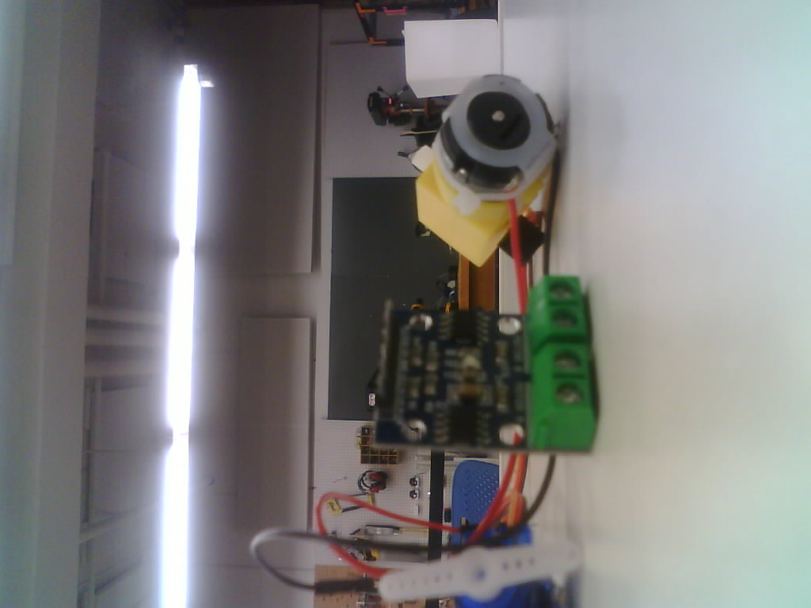
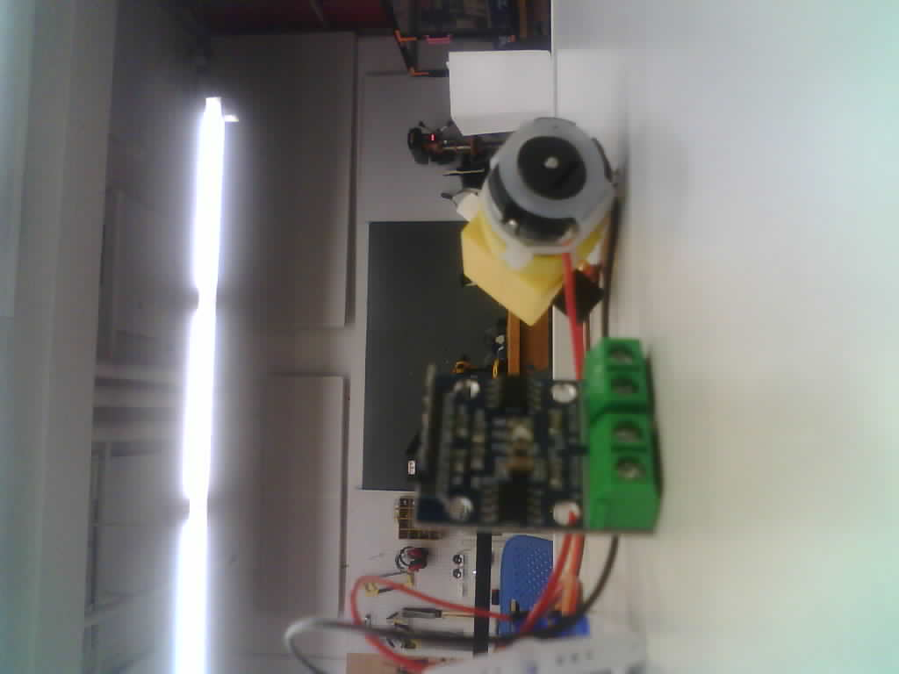
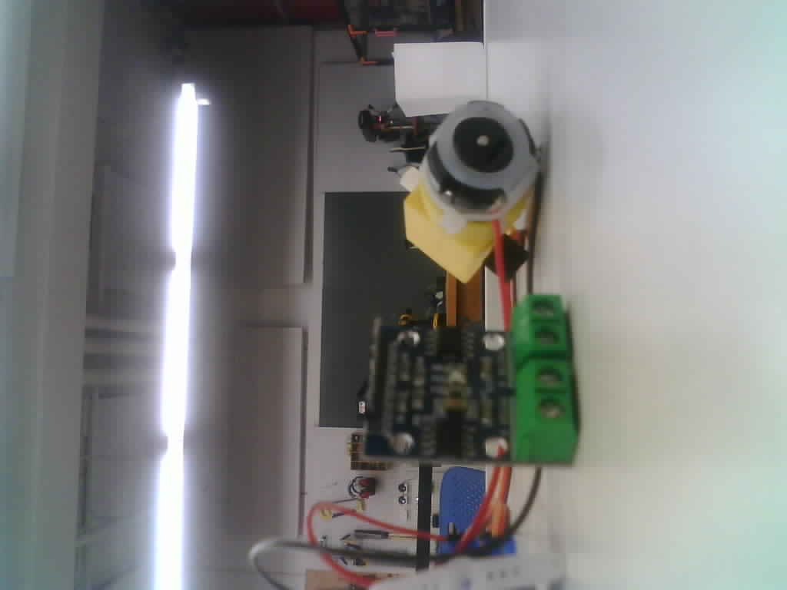
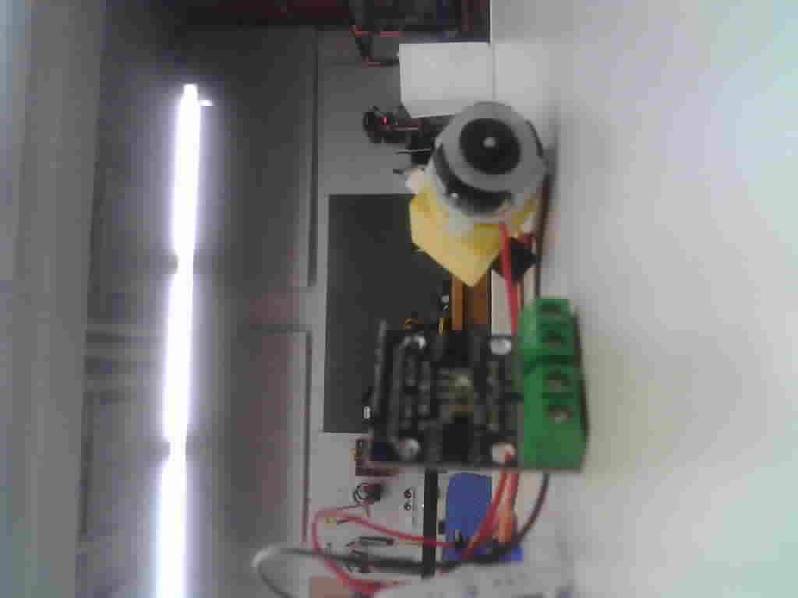

Week 3: Microcontroller Programming
Getting started with the ESP32-CAM
I began this assignment by familiarizing myself with the ESP32-CAM module and completing all the necessary prequisite setup steps. I followed this youtube video and reading this blog post.
After setting up the ESP32-CAM (which actually wasn't too hard), I was able to run the example in ESP32 > Camera > CameraWebServer. Playing around with it was cool, but I didn't really learn much about microcontroller programming nor does it really fit my use case.
Creating my own ESP32-CAM sketch
So instead, I followed different tutorials, examples, and documentation to create a sketch that I could better understand. While a lot of my code was pulled from these sources, I made an effort to actually understand what the sketch was doing. test
The general idea of the sketch is: ESP32 hosts a asynchronous webserver -> ESP32 takes a picture -> webserver gets the picture via web request. If we hit the take a new picture button -> webserver requests to take new picture -> ESP32 takes picture -> upon refresh, webserver gets the new picture via request.
The first picture always looks kind of bad. Not too sure why. One of the examples I looked at took two pictures after a short delay and it supposedly helped, but I have yet to see some satisfactory results.
Code Breakdown
#include "WiFi.h"
#include "esp_camera.h"
#include "esp_timer.h"
#include "img_converters.h"
#include "Arduino.h"
#include "soc/soc.h"
#include "soc/rtc_cntl_reg.h"
#include "driver/rtc_io.h"
#include <ESPAsyncWebServer.h>
#include <SPIFFS.h>
#include <FS.h>
Including the neccessary headers
const char* ssid = "MAKERSPACE";
const char* password = "wow what could this possibly be";
AsyncWebServer server(80);
bool takeNewPhoto = false;
#define FILE_PHOTO "/photo.jpg"
Declaring some variables that will be used later in the sketch. Wifi SSID and password are necessary to host a web server. I'm not sure if I'm allowed to use the MAKERSPACE wifi but better to ask for forgiveness than permission I guess.
#define PWDN_GPIO_NUM 32
#define RESET_GPIO_NUM -1
#define XCLK_GPIO_NUM 0
#define SIOD_GPIO_NUM 26
#define SIOC_GPIO_NUM 27
#define Y9_GPIO_NUM 35
#define Y8_GPIO_NUM 34
#define Y7_GPIO_NUM 39
#define Y6_GPIO_NUM 36
#define Y5_GPIO_NUM 21
#define Y4_GPIO_NUM 19
#define Y3_GPIO_NUM 18
#define Y2_GPIO_NUM 5
#define VSYNC_GPIO_NUM 25
#define HREF_GPIO_NUM 23
#define PCLK_GPIO_NUM 22
Declaring variables representing the pin numbers on the ESP32-CAM. These will be used later when we set a camera configuration.
const char index_html[] PROGMEM = R"rawliteral(
<!DOCTYPE HTML><html>
<head>
<meta name="viewport" content="width=device-width, initial-scale=1">
<style>
@import url('https://fonts.googleapis.com/css2?family=Lato [...] );
:root {
--background-color: #181818;
--primary-text-color: #dedede;
--secondary-text-color: #6a6a6a;
--accent-color: #FFFFFF;
font-family: Lato;
}
body {
text-align:center;
background-color: var(--background-color);
}
html { color: var(--primary-text-color); }
button {
cursor: pointer;
background-color: var(--primary-text-color);
border-radius: 5px;
border: none;
padding: 7px;
color: var(--background-color);
}
p { font-size: 16px; }
img {
transform: rotate(90deg);
object-fit: cover;
width: 700px;
height: 700px;
}
h1 { font-weight: 900; }
</style>
</head>
<body>
<div id="container">
<h1>ESP32-CAM</h1>
<p>
<button onclick="capturePhoto()">CAPTURE ANOTHER PHOTO</button>
<button onclick="location.reload();">REFRESH PAGE</button>
</p>
</div>
<div><img src="saved-photo" id="photo" width="70%"></div>
</body>
<script>
var deg = 0;
function capturePhoto() {
var xhr = new XMLHttpRequest();
xhr.open('GET', "/capture", true);
xhr.send();
}
</script>
</html>)rawliteral";
This is some pretty simple website code for the webserver to display. It has a button to take a new picture and refresh the page and some CSS. PROGMEM stores this in non-volatile flash memory to be accessed later by the webserver. It make sense to preserve the webpage in non-volatile flash memory versus RAM since we won't be changing the website between powercycles—we will always display the same website.
void setup() {
Serial.begin(115200);
Serial.setDebugOutput(true);
Serial.println("\n\n");
// Connect to wifi
WiFi.begin(ssid, password);
Serial.print("Connecting to WiFi");
while (WiFi.status() != WL_CONNECTED) {
delay(1000);
Serial.print(".");
}
Serial.println();
We start serial and also connect to Wifi using some fancy library.
SPIFFS.format();
if (!SPIFFS.begin(true)) {
Serial.println("An Error has occurred while mounting SPIFFS");
ESP.restart();
}
else {
delay(500);
Serial.println("SPIFFS mounted successfully");
}
We also start up SPIFFS, which is another way to store things in non volatile memory on ESP32s. Not 100% sure why the particular tutorial I was following chose to store our image in SPIFF, but I imagine that it maybe be useful to preserve our image even after we turn our device on and off (powercycle).
Serial.print("IP Address: http://");
Serial.println(WiFi.localIP());
We print the local IP address that the ESP32 is hosting the webserver on. Putting this IP address in a browser will allow us to access the website.
camera_config_t config;
config.ledc_channel = LEDC_CHANNEL_0;
config.ledc_timer = LEDC_TIMER_0;
config.pin_d0 = Y2_GPIO_NUM;
config.pin_d1 = Y3_GPIO_NUM;
config.pin_d2 = Y4_GPIO_NUM;
config.pin_d3 = Y5_GPIO_NUM;
config.pin_d4 = Y6_GPIO_NUM;
config.pin_d5 = Y7_GPIO_NUM;
config.pin_d6 = Y8_GPIO_NUM;
config.pin_d7 = Y9_GPIO_NUM;
config.pin_xclk = XCLK_GPIO_NUM;
config.pin_pclk = PCLK_GPIO_NUM;
config.pin_vsync = VSYNC_GPIO_NUM;
config.pin_href = HREF_GPIO_NUM;
config.pin_sccb_sda = SIOD_GPIO_NUM;
config.pin_sccb_scl = SIOC_GPIO_NUM;
config.pin_pwdn = PWDN_GPIO_NUM;
config.pin_reset = RESET_GPIO_NUM;
config.xclk_freq_hz = 20000000;
config.frame_size = FRAMESIZE_XGA;
config.pixel_format = PIXFORMAT_JPEG;
config.grab_mode = CAMERA_GRAB_LATEST;
config.fb_location = CAMERA_FB_IN_PSRAM;
config.jpeg_quality = 10;
config.fb_count = 2;
Camera configuration. I won't go into the specifics of everything, but the most important parts are that .frame_size specifies the resolution and .jpeg_quality specifies the quality of the image. These settings tend to differ depending on the specs of your board, specifically PSRAM.
esp_err_t err = esp_camera_init(&config);
if (err != ESP_OK) {
Serial.printf("Camera init failed with error 0x%x", err);
ESP.restart();
}
Initialize the camera.
// Route for web page and image
server.on("/", HTTP_GET, [](AsyncWebServerRequest * request) {
request->send(200, "text/html", index_html);
});
server.on("/saved-photo", HTTP_GET, [](AsyncWebServerRequest * request) {
request->send(SPIFFS, FILE_PHOTO, "image/jpg", false);
});
// Take a photo when /capture request is given
server.on("/capture", HTTP_GET, [](AsyncWebServerRequest * request) {
takeNewPhoto = true;
request->send(200, "text/plain", "Taking Photo");
});
This is a very important part of the sketch. Basically, the webserver communicates to the ESP32 via web requests. I don't completely understand how this works, but my top level comprehension is that we are telling the ESP32 to pay attention to certain requests at certain URLS. If we recieve such a request, then we run a certain snippet of code.
For example, in the /capture request, the ESP32 is looking for a request at /capture. Upon recieving this request, it sets the global variable takeNewPhoto to true so that we can take a photo. We also send some information back.
server.begin();
Serial.println("Warming up camera and getting initial image");
capturePhotoSaveSpiffs();
delay(4000); // Prevents the image from being dark and green.
capturePhotoSaveSpiffs();
}
We have now reached the end of the setup() function. Here, we take a photo, wait a couple of seconds, and then take another picture. My goal was there to be a picture on the webserver whenever we press the reset button, so we need to take a picture at the the setup() stage. However, the first picture it takes is always green, dark, and noisy so we have to take another.
void loop() {
if (takeNewPhoto) {
capturePhotoSaveSpiffs();
takeNewPhoto = false;
}
delay(1);
}
In our loop, we just need to watch for when takeNewPhoto is true and then take a picture. Remember that a web request from the webserver will cause takeNewPhoto to be true.
bool checkPhoto( fs::FS &fs ) {
File f_pic = fs.open( FILE_PHOTO );
unsigned int pic_sz = f_pic.size();
return ( pic_sz > 100 );
}
This is a simple helper function to check that the camera is working correctly. The test is pretty rudimentary and just checks that the picture is greater than a some arbitrary size.
void capturePhotoSaveSpiffs( void ) {
camera_fb_t * fb = NULL;
bool success = 0;
do {
// Take a photo with the camera
Serial.println("Taking a photo...");
fb = esp_camera_fb_get();
if (!fb) {
Serial.println("Camera capture failed");
return;
}
Serial.printf("Picture file name: %s\n", FILE_PHOTO);
File file = SPIFFS.open(FILE_PHOTO, FILE_WRITE);
if (!file) {
Serial.println("Failed to open file in writing mode");
}
else {
file.write(fb->buf, fb->len); // Payload (image), Payload length
Serial.print("The picture has been saved in ");
Serial.print(FILE_PHOTO);
Serial.print(" - Size: ");
Serial.print(file.size());
Serial.println(" bytes");
}
file.close();
esp_camera_fb_return(fb);
// Check if file has been correctly saved in SPIFFS
success = checkPhoto(SPIFFS);
} while ( !success );
}
The last bit of code actually takes a picture with the camera. It's programmed in such a way that it'll constatnly try to take a photo until it's successful. esp_camera_fb_get(); is the thing that actually makes the camera take a picture and all of the complicated image processing stuff has been abstracted away!
The rest of the function goes into storing the image into non volatile memory with SPLIFFS.
And that's it! You can see all the raw code here.
Image quality comparisons
Which one do you think is the best?
config.jpeg_quality = 5;
config.jpeg_quality = 10;
config.jpeg_quality = 15;
config.jpeg_quality = 20;
config.jpeg_quality = 50;
According to documentation, the lower the jpeg_quality, the better the image should look. I can't really tell between 5 to 15 though.
Notes:
- SPIFFS (Serial Peripheral Interface Flash File System) is ESP32's persistent file storage system. Once written upon flashing, the stuff in SPIFFS is preserved even when the device is rebooted. Think of non volatile memory, but written only at flash.
- The ESP32 communicates to the webserver via requests. When a request is sent to a specific URL, we can execute some piece of code. For example, when a request is recieved on the root URL, the sketch sends the HTML of the webpage. Need to do more reading on this.
- What is happening with task_wdt: esp_task_wdt_reset(707): task not found?? Doesn't seem to be affecting anything though.
Reflection
This assignment taught me a lot about the ESP32-CAM module and ESP32 programming in general. However, it's also made me think about the scale of my final project—it might be too simple! If I can make a pretty effective point-and-shoot camera in a couple of days and a ESP32-CAM module, I might need to increase the complexity of my project to make it more interesting. I'm thinking of adding a receipt printer to print the images or maybe even designing a board with a better camera/chip (which means no more ESP32??!). I'm stil not entirely sure where I want to go with my project now that I've taken the first steps towards making it.
I did have a lot of fun this week though and am pretty satisfied with the outcome of this assignment!